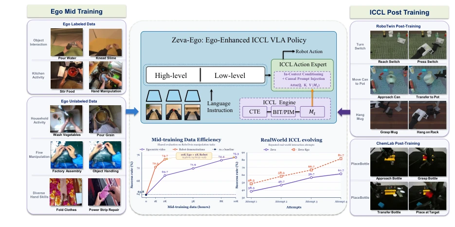
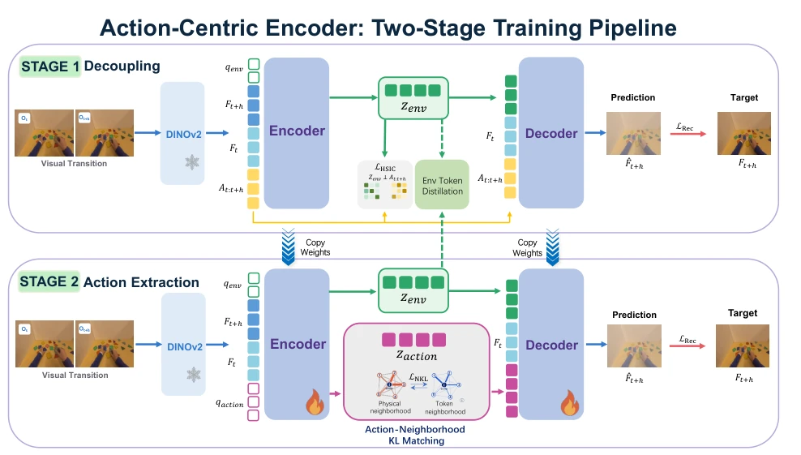
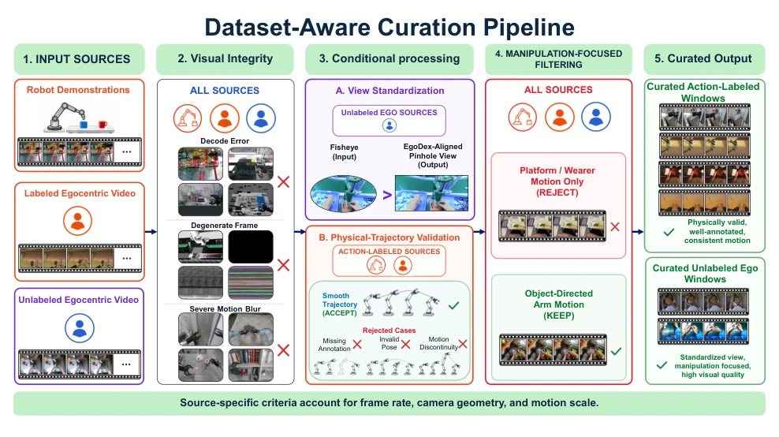
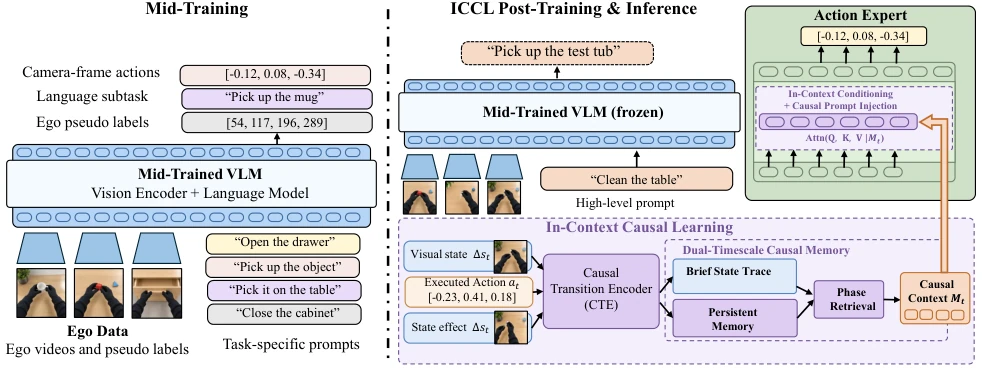
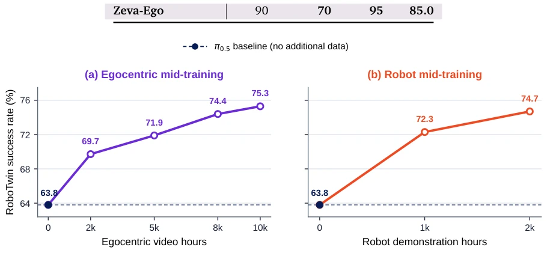
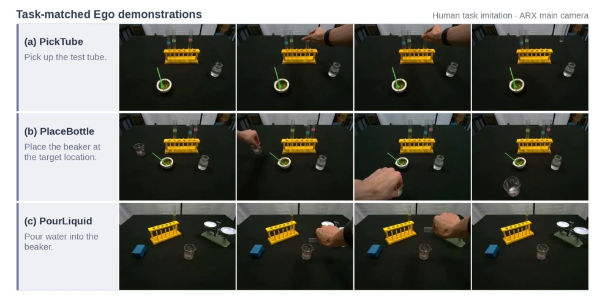
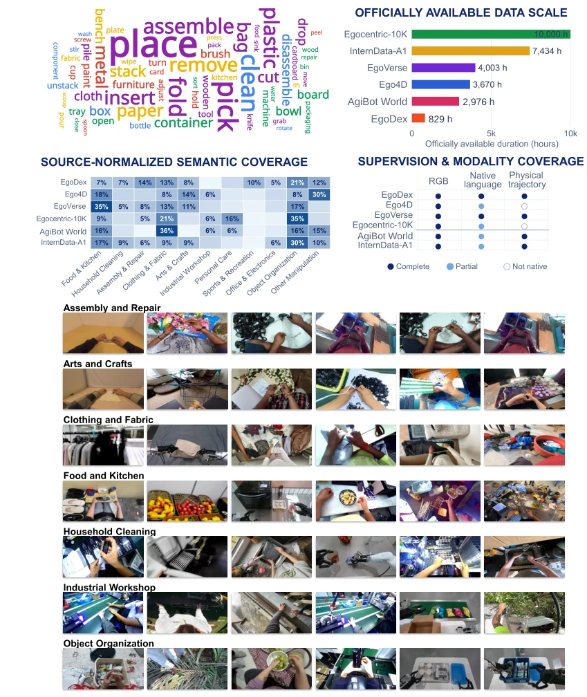
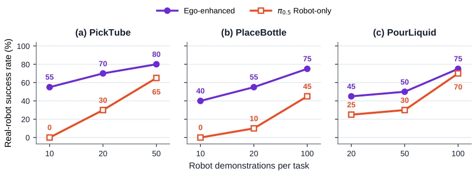
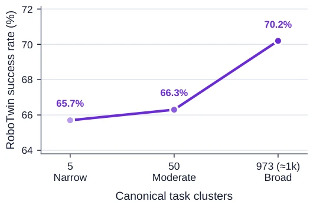
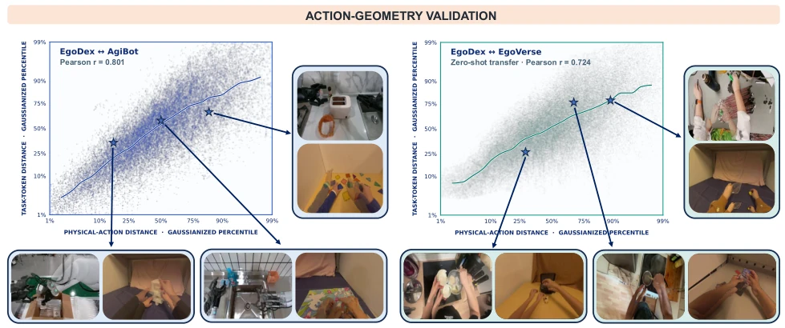

Zeva-Ego attempts to 'feed' robots with vast amounts of human videos and then fine-tune them via 'on-site review'; while this approach is quite appealing, the claimed data efficiency (4-5:1) may merely appear 'beautiful' in the industrial context. Its most significant drawback lies in: although claiming parameter freezing, the construction and retrieval logic of the causal memory bank (ICCL) is extremely complex, and the latency during actual deployment and engineering implementation difficulties are downplayed. Nevertheless, it indeed cleverly extracts 'action geometry' from human videos, addressing the pain point of robot data scarcity, effectively administering a potent 'physical common sense' vaccine to VLA models. However, if the actions in human videos differ too significantly from the robot embodiment, whether the ACE encoder becomes a 'translator' rather than a 'comprehender' remains questionable.
Existing Vision-Language-Action (VLA) models such as RT-1 [1], RT-2 [2], and OpenVLA [3] have demonstrated general potential, but still face two major stubborn problems in open-world manipulation: first, collecting high-quality robot trajectory data is expensive and difficult to scale, limiting model generalization capabilities; second, lacking the ability to adapt to new environments or correct errors after deployment; traditional methods rely on gradient updates, which are slow and unstable. Although Egocentric videos provide massive amounts of human interaction experience [14, 15], direct utilization faces huge challenges: there is an 'embodiment gap' between human wrist movements and robot end-effectors, and videos lack action labels aligned with the robot control space. Furthermore, existing memory mechanisms [26-28] mostly focus on visual history, failing to explicitly encode causal evidence of 'how actions change the environment.' Zeva-Ego aims to solve these pain points, learning human physical priors offline and utilizing causal feedback online to achieve zero-parameter updates, thereby finding a balance between data scarcity and dynamic adaptation.

Figure 1 | Overview of Zeva-Ego. Zeva-Ego first mid-trains a VLA policy on labeled and unlabeled egocentric videos, using pseudo labels to connect visual observations with camera-frame actions and language subtasks. It then combines a frozen VLM with an ICCL-conditioned Action Expert during post-training. The ICCL engine converts action-effect feedback into causal context for low-level control, while the bottom panels summarize the resulting data efficiency and cross-attempt adaptation.
Zeva-Ego adopts a two-stage framework: offline 'Mid-training' and online 'Post-training'. In the first stage, the Action-Centric Encoder (ACE) is used to process massive Egocentric videos. ACE undergoes two-stage training: first decoupling non-action factors in visual changes (such as camera motion), then distilling continuous action Token supervision signals relying only on vision. It unifies 16D end-effector representation and camera frame action blocks, effectively narrowing the geometric gap between human wrists and robot ends. In the second stage, the In-Context Causal Learning (ICCL) engine is introduced. This engine contains the Causal Transformation Encoder (CTE), encoding states, actions, and observation feedback into causal interaction units. The system maintains dual memory: Short-term Memory (BIT) records feedback from current attempts, Long-term Memory (PIM) accumulates experience from similar tasks across attempts. During inference, the VLM backbone (based on π0.5 [17]) remains frozen, only injecting causal context $M_t$ from retrieved PIM into the Action Expert to guide low-level action generation. This design allows robots to dynamically adjust strategies without updating parameters, relying solely on interaction history, achieving 'getting smarter with use'.

Figure 3 | Two-stage training of the Action-Centric Encoder. Stage 1 learns an action-conditioned residual teacher. Stage 2 distills the environment representation into a visual-only encoder and aligns the neighborhood geometry of visual action tokens with that of physical action trajectories.

Figure 4 | Dataset-aware curation pipeline. Visual integrity checks are applied across all sources, followed by source-conditional view standardization or physical-trajectory validation and manipulation-focused temporal filtering.

Figure 5 | Model architecture of Zeva-Ego. During Ego mid-training, egocentric videos and pseudo labels supervise the VLM with camera-frame actions and language subtasks. During ICCL post-training and inference, the frozen VLM predicts a high-level subtask, while the ICCL engine encodes the visual state, executed action, and state effect through a Causal Transition Encoder (CTE). Brief and persistent memories support phase-based retrieval to construct causal context 𝑀𝑡, which is injected into the Action Expert through in-context conditioning and causal prompt injection, without modifying the VLM pathway.
The study was evaluated on three benchmarks: RoboTwin 2.0 (simulation), LIBERO-PRO (distribution shift), and ChemLab-Evo (real world). Results show that under RoboTwin Hard settings, fine-tuning with 10K hours of Egocentric videos increased success rate from 63.8% to 75.3%, equivalent to 2K hours of robot demonstration data (74.7%), validating the 4-5:1 data efficiency. In LIBERO-PRO, the model performed better than the baseline under various distribution shifts. The most outstanding feature is ICCL's adaptive capability: in fixed task instances, as the number of attempts increases, success rate soared from 58% on the first try to 89% on the fourth try, with no parameter updates throughout. Ablation studies indicate that ACE effectively preserved cross-embodiment action geometric features, while ICCL significantly improved cross-attempt correction capabilities.

Figure 6 | Mid-training data scaling on RoboTwin from a shared 𝜋0.5 base checkpoint. (a) Success rate as the duration of egocentric video increases. (b) The corresponding trend for AgiBot World robot demonstrations. All checkpoints receive the same unaugmented RoboTwin post-training.

Figure 7 | Representative task-matched Ego demonstrations used for real-robot post-training. Each row shows four temporal observations from a human imitation recorded by the ARX main camera.
其他图片Other Figures

Figure 2 | Statistics and qualitative examples of the embodied mid-training sources. Reported durations indicate the officially available scale of each source, while semantic distributions are normalized within each dataset.

Figure 8 | Real-robot success rate as a function of the number of Robot demonstrations per task. Every Ego-enhanced point retains 50 task-matched Ego episodes; only the Robot-data budget varies. The Ego-enhanced condition provides the largest advantage in the low-data regime. Markers denote measured settings; absent markers indicate settings that were not evaluated.

Figure 9 | Broader Ego task coverage improves RoboTwin transfer under a matched training budget.

Figure 10 | Action-geometry validation across EgoDex–AgiBot transitions and zero-shot EgoDex–EgoVerse transfer. Distances are visualized as Gaussianized percentiles, with representative pairs shown at different locations in the learned geometry.